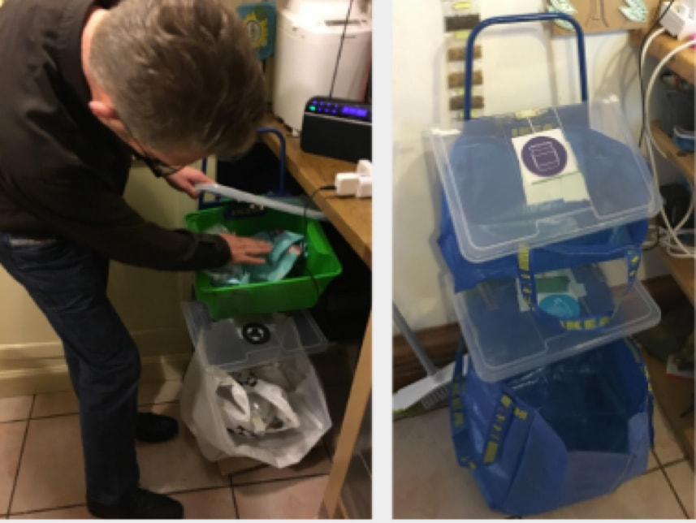
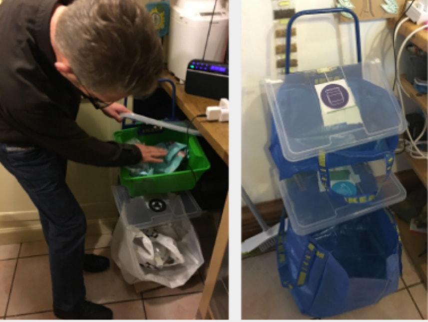
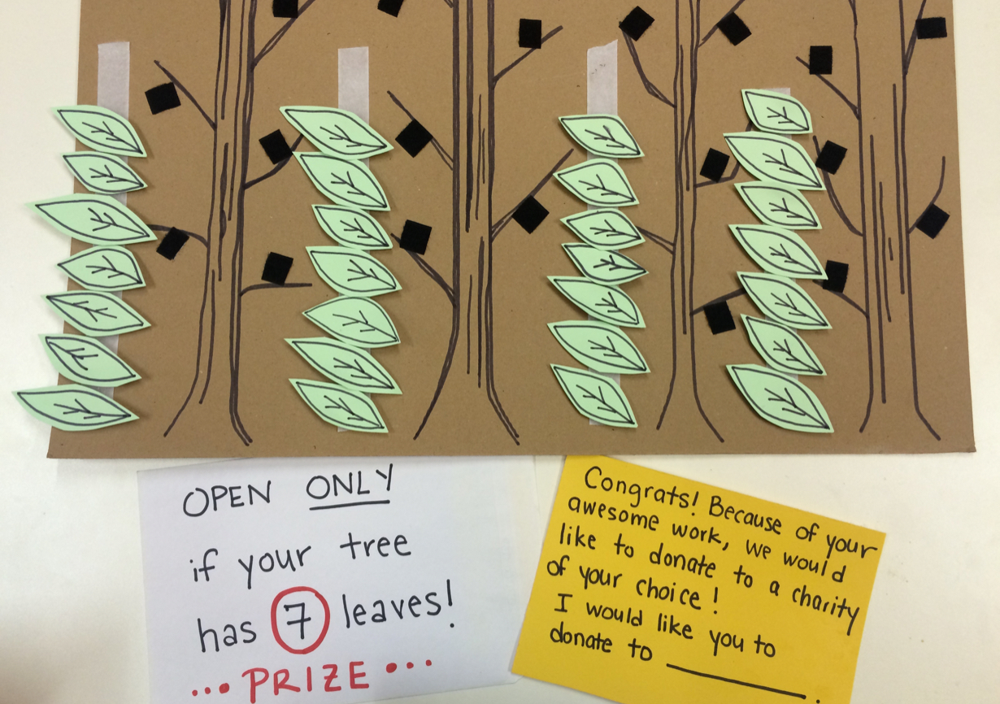

Project Background
The Edinburgh City Council was concerned about the waste management and fly tipping problems in the city. Field research in the areas Gorgie Street and Leith Walk. We interviewed children and adults and filled out journey maps from when they eat food or throw something away up until they dispose of the trash in a bin, conducted an online survey and reviewed the existing app and data sets the Edinburgh city council had. We then created personas and highlighted pain points. We then brainstormed initial ideas and began prototyping and conducting interviews to gain feedback on these ideas.
Data Driven Design
 

After the fast hackathon, we used data driven design for a household bin prototype based on existing city data. This was then placed in the home of a family of four. Sensors in the bins and interviews conducted with family members helped us gain further insights and improvements for the design. Such insights included adding covers to the landfill bins to reduce smell and increasing the size of the mixed recycling bin. We also found that there is a lot of confusion on the color scheme, and conducted more surveys and interviews with school children and adults to report to the council.
Gamification Prototyping
The study and surveys revealed that free form feedback is preferred by students but multiple choice questions related to academic content is preferred by professors. However, professors did agree that free form feedback helps note video quality issues that multiple choice questions cannot address. Based on this feedback, user journeys were created to initialize the product creation. However, it can be argued more research needs to be done.
Insights for Iteration
While this was a paper prototype of a mobile app, we learned that the children actually liked the tactile element of the game and don’t generally carry around their phones in the house. They would rather play against family and friends, instead of neighbors. While the prize was a nice incentive for children, the biggest incentive for the parents to partake in the game was a behavioral change in their children. Based on these insights, we would modify the game for a second round of prototyping.